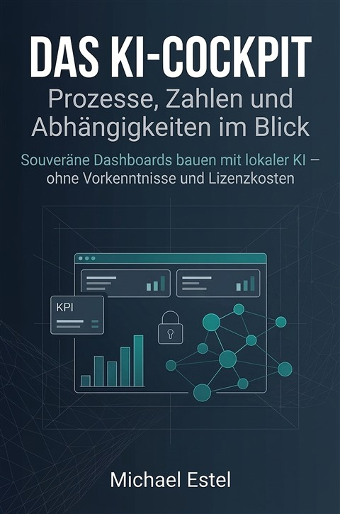

Aktuelle Neuerscheinung 2026
Das KI-Cockpit
Prozesse, Zahlen und Abhängigkeiten im Blick: Souveräne Dashboards bauen mit lokaler KI – ohne Vorkenntnisse und Lizenzkosten
Schritt für Schritt von ersten Diagrammen bis zum lokalen KI-Cockpit anhand zweier durchgehender Beispiele (KMU-Controlling und öffentliche Verwaltung). Entwickelt für Fachabteilungen, Kleinunternehmen und Teams – inklusive Übergabepaket für IT-Sicherheit und Personal- bzw. Betriebsrat.
- Fünf Ausbaustufen: Diagramme, HTML-Cockpit, CSV/Excel-Dropzone, Wissensgraph & lokale KI (Ollama)
- Sechs Governance-Leitplanken und Praxismaterial zur KI-Kompetenz (Art. 4 KI-Verordnung)
- Kostenloses Begleitmaterial mit Live-Demos, Beispieldaten und DIN-A4-Spickzettel